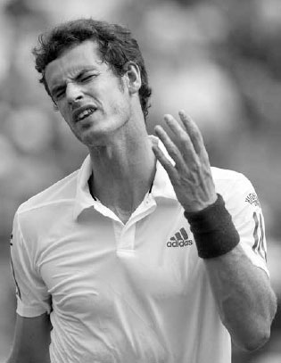
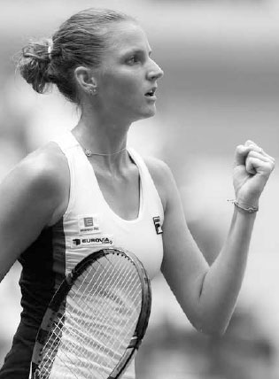
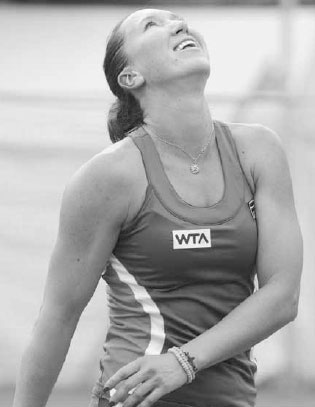

Tâm lý — Tập trung, bình tĩnh, chiến thuật¶
Cải thiện về mặt tinh thần không xảy ra sau một đêm mà, giống như mọi thứ khác trong quần vợt, cần sự rèn luyện và kinh nghiệm. Roger Federer và Bjorn Borg là hai ví dụ về các tay vợt chuyên nghiệp có khí chất tốt trên sân. Nhưng không phải lúc nào cũng như vậy. Khi còn nhỏ, cha mẹ họ từng thu hồi quyền chơi quần vợt của họ sau những cơn giận dữ bùng phát trên sân. Theo thời gian, cả hai tay vợt đã học cách kiểm soát cảm xúc và biến khía cạnh tinh thần trong lối chơi của họ thành một điểm mạnh. Với hầu hết chúng ta, giống như Federer và Borg, trở nên mạnh mẽ về tinh thần là một kỹ năng phải được nuôi dưỡng và phát triển.
Trong chương này, tôi sẽ cung cấp cho bạn một chế độ rèn luyện tinh thần giúp bạn vừa giành được lợi thế về trí tuệ trước đối phương vừa tận hưởng môn thể thao này nhiều hơn. Chương được chia thành tám phần: tiếng nói nội tâm, sự tập trung, sự tự tin, sự tự tin thái quá, vượt qua nghịch cảnh, sự lo lắng, ngôn ngữ cơ thể, và hình dung.
I. Tiếng Nói Nội Tâm¶
ĐIỀU ĐẦU TIÊN BẠN PHẢI HỌC là vượt qua những thử thách của trận đấu bằng một tiếng nói nội tâm tích cực và mang tính xây dựng. Tiếng nói nội tâm rất quan trọng trong mọi môn thể thao, nhưng đặc biệt quan trọng trong quần vợt vì tỷ lệ thời gian thực sự dùng để chơi điểm bóng là khá nhỏ. Phần thời gian còn lại dành cho việc nhặt bóng, đổi sân, và chuẩn bị cho điểm bóng tiếp theo. Bạn muốn dành thời gian đó để suy nghĩ mạch lạc và duy trì tinh thần lạc quan.
Những thông điệp mà tiếng nói nội tâm của bạn nói ra là những xung năng lượng ảnh hưởng đến cách não bộ bạn xử lý trận đấu. Bạn có thể đang thắng nhưng cảm thấy uể oải, hoặc bạn có thể đang thua nhưng vẫn cảm thấy tràn đầy năng lượng, tất cả đều do những thông điệp được gửi qua tâm trí. Những tay vợt mạnh mẽ về tinh thần biết rằng suy nghĩ kiểm soát cảm xúc và cảm xúc ảnh hưởng đến phong độ. Điều quan trọng cần nhớ là nếu bạn có những suy nghĩ tích cực, bạn sẽ ở trong trạng thái cảm xúc tốt và chơi ở một trình độ cao hơn.
Làm sao để bạn cải thiện tiếng nói nội tâm của mình? Thông qua chánh niệm. Tức là, trong trận đấu, hãy tự hỏi liệu suy nghĩ của bạn đang khiến bạn chơi tốt hơn hay tệ hơn. Hãy rèn luyện bản thân sao cho khi một suy nghĩ tiêu cực xuất hiện trong tâm trí, bạn nhận ra nó, gạt bỏ nó, và thay thế bằng một suy nghĩ tích cực. Một tiếng nói nội tâm rối loạn nói rằng \"Tôi ghét cú giao bóng của mình\" sẽ làm suy yếu cú giao bóng của bạn và khiến nó tệ hơn --- suy nghĩ có thể trở thành lời tiên tri tự ứng nghiệm. Thay vào đó, sau một cú lỗi kép, hãy áp dụng lời tự nhủ như, \"Tôi đã đánh những cú giao bóng tuyệt vời vô số lần trước đây và tôi sắp đánh thêm một cú như vậy ngay bây giờ.\" Hoặc, nếu bạn bắt đầu trận đấu kém, đừng tự nói với mình, \"Hôm nay đơn giản không phải ngày của mình.\" Thay vào đó, hãy tự nói, \"Trận đấu mới bắt đầu và tôi biết khả năng căn thời gian và nhịp điệu của mình sẽ cải thiện khi trận đấu tiến triển.\" Tất cả những suy nghĩ nội tâm này đều có hệ quả về mặt cảm xúc, nhưng những suy nghĩ sau có ích hơn nhiều cho phong độ của bạn. Chơi tốt đến từ sự tự tin và niềm tin vào lối chơi của bạn, và suy nghĩ của bạn nên phản ánh sự tự tin và niềm tin đó.
Tất nhiên, mỗi tâm trí đều khác nhau và tâm trí bạn sẽ phản ứng với từ ngữ theo cách riêng của nó, vì vậy hãy thử nghiệm với những từ ngữ và câu nói khác nhau cho đến khi bạn khám phá ra những gì thúc đẩy bạn và lấn át tiềm thức tiêu cực của bạn. Sau trận đấu, hãy phân tích xem tiếng nói nội tâm của bạn đã nói chuyện với bạn tốt như thế nào và đánh giá tỷ lệ thông điệp tiêu cực so với tích cực. Những điều tích cực nên vượt trội hơn hẳn những điều tiêu cực.

\"Hãy tử tế với chính mình,\" Murray từng viết trong một cuốn sổ mà anh đọc trên sân; anh biết rằng tiếng nói nội tâm tiêu cực của mình đôi khi đã ảnh hưởng xấu đến phong độ của anh. Karolina Pliskova phản ứng tích cực sau khi thắng một điểm bóng.
Ngoài ra, đừng đè nặng tâm trí bạn bằng quá nhiều lời tự nhủ về kỹ thuật trong trận đấu. Hãy để việc rèn kỹ thuật cho sân tập. Trong các trận đấu, lời tự nhủ nên tập trung vào việc giữ tích cực, chiến thuật, và tinh thần thi đấu tổng thể. Suy nghĩ về kỹ thuật trong trận đấu có thể dẫn đến \"tê liệt vì phân tích quá mức,\" khi những nỗ lực cải thiện sự phối hợp giữa hoạt động não bộ và chuyển động cơ bắp lại khiến nó tệ hơn. Như Serena Williams từng nói, \"Khi tôi suy nghĩ quá nhiều, tôi giao bóng không tốt. Khi tôi chỉ nói, \'Serena, chỉ cần đánh bóng và giao,\' đó là lúc tôi giao bóng thực sự tốt.\"
HỘP HUẤN LUYỆN VIÊN: Hãy tự nói chuyện với chính mình như cách bạn nói với đồng đội đánh đôi khi bạn muốn truyền cảm hứng cho họ hoặc nâng cao phong độ của họ. Bằng cách tự nói chuyện với chính mình như với một đồng đội đánh đôi hoặc người bạn tốt, bạn sẽ tự nhủ theo cách hỗ trợ và động viên thay vì phê phán và hạ thấp.
LUYỆN TẬP TIẾNG NÓI NỘI TÂM Sau khi điểm bóng kết thúc, bạn có khoảng 15 giây để chuẩn bị cho điểm bóng tiếp theo. Trong khoảng thời gian đó, có bốn giai đoạn mà tiếng nói nội tâm phải vượt qua để duy trì tính xây dựng. Bằng cách làm điều này và thiết lập nhịp độ và nhịp điệu riêng của bạn giữa các điểm bóng, bạn sẽ cảm thấy làm chủ tình hình và có được sự tự tin từ cảm giác đó cùng sự quen thuộc của nó.
GIAI ĐOẠN 1: PHẢN ỨNG VỚI ĐIỂM BÓNG VỪA QUA Nếu bạn thắng điểm bóng, hãy dùng cảm giác tích cực để thúc đẩy năng lượng của mình; nếu bạn thua nó, hãy nhanh chóng suy ngẫm về những gì có thể học được và quay lại trạng thái tinh thần tích cực.
GIAI ĐOẠN 2: THƯ GIÃN VÀ HỒI PHỤC Trong giai đoạn này, hơi thở của bạn nên sâu, ngôn ngữ cơ thể tích cực, và tiếng nói nội tâm yên lặng, đảm bảo tâm trí được thư giãn và cảm thấy yên tâm.
GIAI ĐOẠN 3: CHUẨN BỊ Bắt đầu nâng trạng thái cảm xúc của bạn lên và trở nên hào hứng để chơi điểm bóng tiếp theo. Bây giờ bạn đang suy nghĩ chiến thuật về cách bạn sẽ giao bóng hoặc đỡ giao bóng và mức độ tấn công nào sẽ cho bạn xác suất cao nhất để thắng điểm bóng.
GIAI ĐOẠN 4: THỰC HIỆN NGHI THỨC Nghi thức có thể bao gồm số lần bạn nảy bóng trước khi giao hoặc cách bạn di chuyển chân trước cú đỡ giao bóng. Những nghi thức này trước khi bạn bắt đầu điểm bóng đặt cơ thể bạn ở chế độ tự động và cho phép tâm trí bạn trở nên nhẹ nhõm, làm sâu sắc thêm sự tập trung của bạn cho nhiệm vụ phía trước.
Tất cả các tay vợt chuyên nghiệp đều phát triển phương pháp riêng để tìm ra cách dùng tiếng nói nội tâm của họ như một lực lượng tích cực qua từng giai đoạn trong bốn giai đoạn này. Hãy luyện tập và phát triển cách riêng của bạn để duy trì tinh thần lạc quan giữa các điểm bóng và dùng quá trình đó để ở trong trạng thái cảm xúc tối ưu khi bạn bắt đầu mỗi điểm bóng.
Đôi khi các tay vợt chuyên nghiệp dùng những nghi thức như chỉnh lại dây vợt để thu thập suy nghĩ của mình.
II. Sự Tập Trung¶
QUẦN VỢT ĐÒI HỎI SỰ TẬP TRUNG ổn định. Nếu bạn có thể duy trì sự tập trung, bạn sẽ đưa ra những lựa chọn cú đánh tốt, giữ vững kế hoạch thi đấu đã chuẩn bị, và tiến một bước lớn đến việc duy trì mức năng lượng và quyết tâm cần thiết để thắng trận đấu.
Có thể khó tập trung vì tâm trí chúng ta tự nhiên có xu hướng chuyển hướng chú ý khi gặp những kích thích mới lạ. Xu hướng thiên vị đối với những hình ảnh và âm thanh mới này từng cảnh báo tổ tiên chúng ta về những nguy hiểm trong tự nhiên, nhưng nó là một lực lượng phá hoại trong môn quần vợt. Trong một trận đấu điển hình, bạn sẽ bị dội bom bởi những kích thích, suy nghĩ, và cảm xúc từ bên trong và bên ngoài. Nếu bạn hoàn toàn tập trung, bạn nên có thể loại bỏ mọi thứ không liên quan đến kế hoạch thi đấu của mình, dù đó là một khán giả ủng hộ đối phương gây rối, một trận đấu khác đang diễn ra trên sân bên cạnh, hay một đối phương dành quá nhiều thời gian giữa các điểm bóng. Những người chơi có khả năng tập trung tốt có thể kiểm soát hướng suy nghĩ của họ và loại bỏ những loại xao nhãng này.
Điều quan trọng là biết không chỉ nên tập trung vào điều gì, mà còn cách duy trì sự tập trung trong một khoảng thời gian dài. Nhiều người chơi có thể tập trung hoàn toàn cho một set, nhưng ít người có thể làm điều đó liên tục trong hai hoặc ba set.
May mắn thay, sự tập trung là một kỹ năng tinh thần có thể được phát triển thông qua sự lặp lại và luyện tập. Việc phát triển những câu cửa miệng nội tâm như \"chỉ có bóng mới quan trọng\" hoặc \"ngay tại đây, ngay bây giờ,\" và thêm những nghi thức như chỉnh lại dây vợt hoặc nảy bóng xuống đất để đưa một tâm trí bị xao nhãng trở về đúng nơi nó cần ở cũng rất hữu ích.
Jelena Jankovic để cho sự thất vọng vì đánh mất lợi thế ở set hai làm mờ đi sự tập trung của cô trong set ba ở trận chung kết Indian Wells 2015.
1. Ở LẠI HIỆN TẠI¶
Sự tập trung đòi hỏi việc ở lại hiện tại. Sau bất kỳ trở ngại nào, dù là mất một lợi thế lớn hay bỏ lỡ một cú đánh dễ dàng, có thể khó để duy trì tập trung. Nhiều người chơi, ngay cả các tay vợt chuyên nghiệp thi đấu, day dứt về những trở ngại và cuối cùng khiến bản thân thất vọng thêm. Jelena Jankovic, trong set ba của trận chung kết đơn nữ Indian Wells 2015, vẫn đang nghĩ về những cơ hội bị bỏ lỡ trước đó trong trận đấu. Trong lúc đổi sân ở một set ba sát nút, tôi nghe cô nói với huấn luyện viên trên truyền hình, \"Tôi đã không thể giữ được cú giao bóng của mình... Đó là lý do tôi thua set hai đó.\" Cô tiếp tục thua trận đấu, và việc thiếu suy nghĩ hiện tại của cô không giúp ích được gì.
Tâm trí bạn nên sạch sẽ vào đầu mỗi điểm bóng. Việc day dứt về cú đánh bị lỡ trước đó chỉ củng cố lỗi lầm đó trong tâm trí bạn và tăng khả năng bạn mắc lại cùng lỗi đó. Nếu bạn bị phân tâm bởi điểm bóng trước theo bất kỳ cách nào, hãy đưa tâm trí bạn trở về hiện tại và giữ sự tập trung vào cú giao bóng hoặc cú đỡ giao bóng tiếp theo.
HỘP HUẤN LUYỆN VIÊN: Trong các buổi luyện tập, hãy chơi những game dài nhấn mạnh vào điểm số để nâng cao và kéo dài sự tập trung. Ví dụ, chơi game \"Bóng Bàn\" nơi bạn và đối tác tập luyện của bạn giao năm điểm một lần và người đầu tiên đạt 21 điểm thắng. Nếu ai đó quên điểm số, họ phải thực hiện một hoạt động thể chất được chỉ định, như chống đẩy hoặc chạy vòng quanh sân, như một hình phạt. Bạn càng có thể luyện tập trong những tình huống đòi hỏi sự tập trung, khả năng tập trung của bạn sẽ càng dài và mạnh hơn.
Điều này không có nghĩa là bạn không nên học hỏi từ những gì vừa xảy ra, mà là bạn không nên day dứt về những lỗi lầm trong quá khứ. Ví dụ, nếu bạn thua điểm trước đó vì thử một cú đánh rủi ro, bạn có thể tự nhắc mình kiên nhẫn hơn vào lần sau. Hoặc, nếu đối phương đánh một cú vô lê thắng điểm từ gần lưới, bạn có thể ghi nhớ trong đầu để tạt bóng bổng thường xuyên hơn.
Hãy nhớ rằng những đặc điểm tinh thần tiêu cực của sự tự tin thái quá và thiếu tự tin đều là những phẩm chất hướng về tương lai có chung sự vắng mặt của suy nghĩ hiện tại. Ví dụ, thư giãn khi bạn đang dẫn 40-0 vì cho rằng game đấu đã chắc chắn thuộc về mình có thể phải trả giá đắt. Nếu bạn thua điểm 40-0 vì một cú đánh bất cẩn rồi tiếp tục thua điểm tiếp theo, tỷ số bỗng trở thành 40-30 và không chỉ đối phương đã lấy lại được động lực, mà khả năng thua game đấu mà bạn từng dẫn trước rất nhiều có thể làm tăng sự lo lắng của bạn và khiến bạn chơi điểm 40-30 kém đi.
Tóm lại: đừng trì hoãn. Hãy chiến đấu để ở lại hiện tại trong mỗi game, từng điểm một, vì động lực của một game có thể nhanh chóng chuyển hướng khỏi bạn. Nếu bạn đang thua 0-40, đừng từ bỏ việc thắng game đó; đối phương có thể mắc lỗi thiếu suy nghĩ hiện tại, chơi một điểm lỏng lẻo, và cho phép bạn trở lại game đấu. Điều này có thể rất lớn trong một trận đấu. Thắng một game từ thế 0-40 có thể làm suy sụp tinh thần đối phương và đôi khi thay đổi cục diện của set đấu.
2. TẬP TRUNG VÀO QUÁ TRÌNH¶
Những người chơi có khả năng ở lại hiện tại đã rèn luyện tâm trí họ tập trung vào quá trình chứ không phải kết quả. Đừng ám ảnh về thắng hay thua. Hãy nghĩ về trận đấu nhiều hơn như một canh bạc xác suất và tập trung vào việc thực hiện những hành động sẽ nghiêng tỷ lệ về phía bạn.
Những tác động tiêu cực của việc tập trung vào kết quả thể hiện rõ trong thất bại của Serena Williams trước Roberta Vinci tại U.S. Open 2015. Áp lực phải thắng giải đấu đó và hoàn thành Grand Slam lịch sử đã góp phần vào lối chơi lo lắng của Serena và thất bại trước một tay vợt mà cô đã đánh bại bốn lần trước đó mà không thua set nào. Ngay cả trong môi trường thư thái của các buổi học nhóm của tôi, tác động tiêu cực của việc tập trung vào kết quả đôi khi cũng dễ dàng nhận ra.
Nếu một trò chơi thắng đến chín điểm kết thúc với tỷ số chín đều, những cú vung vợt từng tự tin lúc đầu trò chơi đôi khi trở nên kém chắc chắn hơn. Thay vì nâng cao trình độ chơi khi điều đó quan trọng nhất, thường thì càng gần đến kết quả, phong độ của người chơi càng giảm.
Để giữ trình độ chơi của bạn luôn cao, hãy tập trung vào quá trình. Bạn có thể nghĩ về quá trình của trận đấu như một hệ thống GPS dẫn bạn đến một điểm đến mong muốn. Tương tự như cách GPS đưa ra một chuỗi chỉ dẫn đường đi, quá trình quần vợt từng điểm một dẫn bạn đến chiến thắng bao gồm việc duy trì tinh thần tích cực, di chuyển chân tốt, sử dụng đúng chiến thuật, và đánh bóng với mức độ tấn công phù hợp. Nếu bạn tập trung theo cách này, nhiều khả năng bạn sẽ đến được điểm đến mong muốn vào cuối trận đấu: chiến thắng.
Andre Agassi từng viết, \"Được giải phóng khỏi suy nghĩ về việc thắng, tôi lập tức chơi tốt hơn. Tôi ngừng suy nghĩ, bắt đầu cảm nhận. Các cú đánh của tôi trở nên nhanh hơn nửa giây, các quyết định của tôi trở thành sản phẩm của bản năng hơn là logic.\" Hãy nhìn nhận sự tập trung vào quá trình với một cảm giác say mê và nhiệt huyết. Quần vợt có nhiều cú đánh và biến số đều được lọc qua sự không hoàn hảo của con người, và do đó, quá trình không bao giờ có thể dự đoán được hay tầm thường. Đó là một phẩm chất tuyệt vời của quần vợt; hãy tận dụng nó. Sau khi thắng điểm quyết định trận đấu, bạn nên cảm thấy tuyệt vời về chiến thắng, nhưng cũng hơi hụt hẫng vì niềm vui được đắm chìm trong quá trình đã kết thúc. Nếu bạn có thể cảm nhận theo cách này, bạn sẽ chơi với sự nhiệt huyết và thư thái, và đạt đến một trạng thái thăng hoa mà không đủ người chơi trải nghiệm được.
III. Sự Lo Lắng¶
SỰ LO LẮNG CÓ THỂ TẠO RA những căng thẳng cụ thể về thể chất và tinh thần. Nó có thể dẫn đến nhịp tim tăng cao, sự căng cứng ở chân và tay, và tâm trí đua nhanh. Đến lượt nó, điều này có thể làm chậm sự di chuyển của bạn, siết chặt cách cầm vợt, và làm mờ đi sự tập trung của bạn. Tốc độ vung vợt của bạn có thể chuyển từ sự tấn công có kiểm soát sang việc đánh bóng do dự và hy vọng bóng vào sân hoặc vung vợt quyết liệt để kết thúc điểm bóng càng nhanh càng tốt. Tất nhiên, sự trớ trêu lớn của lo lắng là người chơi trở nên căng thẳng vì họ khao khát chiến thắng, nhưng đáng tiếc, điều đó có thể dẫn đến một lối chơi khiến họ càng xa rời mục tiêu đó hơn.
Chắc chắn, một mức độ lo lắng đã được tích hợp sẵn trong chính môn thể thao này. Do cách tính điểm của quần vợt, các cú lội ngược dòng được khuyến khích, vì vậy người chơi có thể cảm thấy thiếu an toàn khi đang dẫn trước. Bản chất đột ngột của hệ thống tính điểm cũng có thể làm tăng lo lắng. Ví dụ, ở tỷ số 5-5 trong loạt tie-break set ba, cả hai người chơi đều chỉ cách chiến thắng một trận đấu rất dài hai điểm. Có rất nhiều thời gian, công sức, và cảm xúc đã đầu tư vào trận đấu tính đến thời điểm đó nên có thể hiểu được người chơi trở nên lo lắng. Hơn nữa, không có giới hạn thời gian trong quần vợt, và do đó, không có cách nào để giữ an toàn một lợi thế bằng cách câu giờ. Bạn phải hoàn thành nhiệm vụ. Bạn có thể nỗ lực để vượt qua sự lo lắng vốn có trong quần vợt. Dưới đây là năm mẹo tinh thần có thể giảm bớt sự lo lắng của bạn.
1. NHẬN THỨC ĐÚNG VỀ TÌNH HUỐNG¶
Tác động của lo lắng lên trình độ chơi của bạn phần lớn dựa vào cách bạn nhận thức. Hãy đón nhận tư duy rằng bạn may mắn khi khỏe mạnh và đang chơi trước một đối thủ xứng đáng trong một môn thể thao bạn yêu thích. Cảm giác biết ơn sẽ kích thích một phần quan trọng của não bộ làm giảm căng thẳng.
Ngoài ra, việc phát triển một góc nhìn rộng hơn về môn thể thao và xem sự nghiệp quần vợt của bạn như một quá trình học hỏi, phiêu lưu, và khám phá bản thân đang phát triển cũng rất hữu ích. Bạn càng có thể tiếp thêm nhiên liệu cho phong độ của mình bằng cảm giác nhiệt huyết nội tâm và sự phát triển bản thân tích cực, bạn sẽ càng thư thái và chơi tốt hơn.
\"Thành công là một hành trình, không phải một đích đến. Quá trình thực hiện thường quan trọng hơn kết quả.\" - Arthur Ashe
2. TẬP TRUNG VÀO QUÁ TRÌNH, KHÔNG PHẢI KẾT QUẢ¶
Như đã đề cập trước đó, hãy tập trung vào việc thực hiện các bước giúp bạn đưa trận đấu theo hướng chiến thắng và tránh suy nghĩ về kết quả cuối cùng của trận đấu.
3. TIẾP TỤC DI CHUYỂN VÀ HÍT THỞ SÂU¶
Nếu bạn đang vật lộn với sự lo lắng, hãy giữ chân mình di chuyển và thực hiện một số cú vung vợt trong không khí để giúp bạn giữ thoải mái. Đừng ngại quay lưng lại với đối phương trong vài giây giữa các điểm bóng và hít thở sâu vài lần trước khi chuẩn bị giao bóng hoặc đỡ giao bóng.
Ngay cả những tay vợt vĩ đại cũng có thể để sự lo lắng lấn át họ. Lối chơi lo lắng mà chính Nadal tự nhận đã dẫn đến một số thất bại khác thường vào năm 2015. Sau thất bại sớm tại Miami Open 2015, anh nói, \"Đó không phải là vấn đề về quần vợt, vấn đề là về việc đủ thư thái để chơi tốt... Tôi vẫn đang chơi với quá nhiều lo lắng trong nhiều khoảnh khắc.\"
4. THƯ GIÃN VÀ TIN TƯỞNG¶
Trớ trêu thay, chính bằng cách buông bỏ một chút mà sự lo lắng của bạn giảm đi và bạn chơi tốt hơn. Bạn sẽ chơi tốt nhất khi bạn tin tưởng vào cú vung của mình và có sự tự tin rằng cơ thể bạn sẽ làm đúng điều cần làm. Hãy nghĩ xem bao nhiêu lần bạn đã đánh một cú đỡ giao bóng tuyệt vời trên một cú giao bóng bị ra ngoài khoảng 30-60cm. Một khi bạn nhận ra cú giao bóng ra ngoài, bạn đã từ bỏ sự kiểm soát của ý thức và cho phép cú vung của bạn phát triển tự do không bị cản trở bởi lo lắng.
5. HÃY NHỚ RẰNG ĐỐI PHƯƠNG CỦA BẠN CÓ THỂ CŨNG ĐANG LO LẮNG¶
Nếu bạn đang lo lắng, bạn có thể an ủi rằng đối phương của bạn có khả năng cũng đang lo lắng. Nếu bạn có thể áp dụng hiệu quả những lời khuyên đã bàn ở trên, bạn có thể giành lợi thế tâm lý và tăng cơ hội thắng trận đấu.
Áp dụng lời khuyên này để giảm sự lo lắng trong cơn cuồng nộ của trận đấu không hề dễ dàng. Nó phải được luyện tập và mài giũa một cách kiên trì. Ngoài ra, bạn phải có khả năng phân biệt sự lo lắng có hại với một chút cảm giác hồi hộp nhẹ --- áp lực tích cực --- thúc đẩy bạn chơi tốt nhất. Một mức độ lo lắng nhỏ ở một giai đoạn then chốt của trận đấu là bình thường và có thể là chất xúc tác cho phong độ đỉnh cao. Nó sẽ tạo ra adrenaline mà, khi được điều hướng đúng cách, có thể giúp bạn chơi tốt hơn, với nhận thức được nâng cao và sự sẵn sàng cơ bắp tăng lên. Hãy học cách trân trọng nó và rèn luyện bản thân để liên kết một liều lượng lo lắng nhẹ với sự phấn khích và một cơ hội để chơi quần vợt tốt nhất của bạn.
Phát triển khả năng tận hưởng áp lực và chơi tốt trong một trận đấu sát nút sẽ là một nguồn tự hào lớn và một ký ức mà bạn có thể hồi tưởng với niềm vui.
IV. Sự Tự Tin¶
CHƠI VỚI SỰ TỰ TIN nằm ở đầu đối diện của phổ phong độ so với sự lo lắng và thường sẽ đóng vai trò quan trọng trong kết quả của trận đấu. Khi bạn tự tin, cơ thể bạn trôi chảy và bạn chơi theo cách thư thái và quyết đoán. Nhiều lần trong sự nghiệp huấn luyện của mình, tôi đã thấy tác động tích cực mà sự gia tăng tự tin có thể mang lại cho học trò. Ví dụ, nếu một người chơi thiếu kinh nghiệm thắng một game giao bóng trong buổi học nhóm khi nhắm vào các mục tiêu, sự tự tin đạt được từ chiến thắng đó thường sẽ khiến học trò đó mong chờ giao bóng nhiều hơn, luyện tập cú giao bóng nhiều hơn, và cải thiện cú giao bóng của họ nhanh hơn nhờ chiến thắng đó và sự gia tăng niềm tin.
Sự tự tin có thể ảnh hưởng đến lối chơi của một người chơi theo nhiều cách khác nhau. Ví dụ, nếu bạn tin vào cú thuận tay của mình, bạn sẽ dứt khoát hơn với cú đánh đó. Nếu bạn rất khỏe mạnh, bạn sẽ tự tin cho đến cuối một trận đấu dài nhờ sức bền vượt trội của mình. Sự tự tin cũng dẫn đến việc ra quyết định tốt. Nếu bạn tự tin vào lối chơi cuối sân của mình, bạn sẽ giữ được sự kiên nhẫn trong pha đôi công, chơi quần vợt tỷ lệ thành công cao. Tuy nhiên, nếu bạn thiếu tự tin vào các cú đánh nền của mình, bạn có thể cố kết thúc điểm bóng nhanh chóng bằng một cú giao bóng tỷ lệ thấp hoặc một cú đánh cuối sân quá tấn công.

Marin Cilic ngã xuống đất sau khi thắng U.S. Open 2014. Sự tự tin của anh tăng dần theo mỗi chiến thắng trong giải đấu, giúp anh chơi quần vợt hay nhất của mình.
Sự tự tin tự xây đắp trên chính nó, phần lớn nhờ việc thắng các trận đấu. Khi bạn thắng, bạn trở nên tự tin hơn, và từ cảm giác này bạn chơi tốt hơn và hưởng lợi từ chu kỳ may mắn này. Cách Marin Cilic quét qua Thomas Berdych, Roger Federer, và Kei Nishikori thẳng set để bất ngờ giành chức vô địch U.S. Open 2014 là một ví dụ về cách sự tự tin có thể đưa lối chơi của một người chơi lên tầm cao mới. Khi mô tả chuỗi trận của Cilic, Federer nói ngắn gọn, \"Không sợ hãi và chỉ toàn là sự tự tin.\" Sự tự tin có thể là một chu kỳ tích cực; tuy nhiên, chu kỳ có thể gặp trở ngại hoặc đảo ngược sau những thất bại. Hãy nhớ rằng sự tự tin của bạn sẽ lên xuống trong suốt sự nghiệp quần vợt của bạn, và do đó, khôn ngoan là hãy trân trọng nó khi nó hiện diện và đừng nản lòng nếu nó phai nhạt, vì nó sẽ quay trở lại.
Nếu bạn mất niềm tin vào lối chơi của mình, bạn nên tìm cách tái thiết lập niềm tin đó --- ngay cả những tay vợt vĩ đại cũng làm điều này. Sau khi thua ở vòng hai Wimbledon 2013, Federer nhanh chóng quyết định tham gia một giải đấu nhỏ ở Hamburg với hy vọng tích lũy chiến thắng và khôi phục niềm tin vào lối chơi của mình. Anh nói, \"Ngay bây giờ tôi chỉ muốn thắng nhiều trận đấu, hy vọng thắng vài giải đấu, và rồi kiểu như xây dựng lại sự tự tin.\" Nếu bạn trải qua một giai đoạn phong độ kém, bạn có thể làm như Federer đã làm và tham gia một giải đấu ở mức thấp hơn trình độ thường lệ của bạn. Thắng một loạt trận đấu trước những người chơi cho bạn thêm chút thời gian để chuẩn bị cho các cú đánh của mình có thể mang lại những đức tính tích cực của sự tự tin.
Dưới đây là ba mẹo bổ sung được gợi ý bởi huấn luyện viên quần vợt kiêm nhà tâm lý học nổi tiếng Allen Fox mà bạn có thể dùng để khôi phục niềm tin vào lối chơi của mình.
1. CHUẨN BỊ TRƯỚC TRẬN ĐẤU¶
Dành thời gian trên sân tập và biến việc lặp lại thành công các cú đánh thành một phần của phương thuốc. Trước khi bước ra sân, hãy thực hiện một buổi hình dung kéo dài (xem trang 296) để đưa bản thân vào trạng thái tinh thần tích cực và làm nóng cơ bắp thông qua giãn cơ động để đảm bảo cơ thể bạn sẵn sàng hành động trước khi quả bóng đầu tiên được đánh.
2. CHƠI QUẦN VỢT TỶ LỆ THÀNH CÔNG CAO¶
Bạn có thể xây dựng sự tự tin trong trận đấu bằng cách kéo dài các pha đôi công và đánh các cú đánh của mình cao hơn trên lưới một chút và vào trong vạch nhiều hơn thường lệ. Hiệu ứng tích lũy của việc đánh nhiều cú đánh hơn sẽ cải thiện khả năng căn thời gian và niềm tin của bạn vào lối chơi của mình. Một khi sự tự tin vào lối chơi của bạn quay trở lại, bạn có thể chơi với nhiều sự tấn công và rủi ro hơn.
3. LUYỆN TẬP CHĂM CHỈ ĐỂ SỬA CÁC LỖI KỸ THUẬT CÚ ĐÁNH¶
Nếu bạn có một lỗi kỹ thuật trong lối chơi của mình, hãy luyện tập chăm chỉ để sửa nó để các cú vung của bạn luôn mượt mà ở mọi giai đoạn của trận đấu. Nếu bạn có kỹ thuật tốt, bạn sẽ có nhiều khả năng tự tin hơn nhiều. Ví dụ, nếu bạn có một trục trặc trong cú giao bóng thứ hai, kỹ thuật sai lầm và sự thiếu tự tin sau đó của bạn có khả năng sẽ thể hiện qua những cú lỗi kép dưới áp lực. Khi đối mặt với một điểm yếu trong lối chơi của mình, hãy áp dụng cách tiếp cận tinh thần rằng mọi người chơi đều có điểm mạnh và điểm yếu và hiểu rằng các cú đánh của bạn đã tốt nhất có thể ở thời điểm hiện tại. Hãy đoàn kết về mặt tâm lý đằng sau tư duy \"những lá bài bạn được chia\" và luôn giữ tích cực trong một trạng thái cảm xúc tốt.
V. Sự Tự Tin Thái Quá¶
SỰ TỰ TIN LÀ TỐT, nhưng sự tự tin thái quá có thể phải trả giá đắt. Đừng bao giờ cho rằng trận đấu đã chắc chắn thuộc về mình chỉ vì đối phương có thứ hạng thấp hơn hoặc là người bạn đã đánh bại nhiều lần trước đây. Sự tự tin thái quá này có thể dẫn đến sự chuẩn bị tinh thần và thể chất kém trước trận đấu sẽ làm tổn hại phong độ của bạn. Cách tiếp cận tinh thần đúng đắn là luôn tôn trọng đối phương và chuẩn bị nghiêm túc cho mọi trận đấu, không có ngoại lệ.
Sự tự tin thái quá cũng có thể ập đến trong trận đấu. Ngay cả khi bạn mới chơi một lượng nhỏ quần vợt thi đấu, có khả năng cao bạn đã từng mất cảnh giác và trải nghiệm cảm giác tồi tệ khi đánh mất một lợi thế 5-1 hoặc 5-2 trong một set. Khi bạn hoàn toàn làm chủ một trận đấu như vậy, có nguy cơ rơi vào \"bẫy thoải mái\" nơi bạn cảm thấy hài lòng với tình hình và chơi mà không có cường độ cạnh tranh để hoàn thành nhiệm vụ. Điều này có thể dẫn đến những cú đánh bất cẩn và mở đường cho đối phương trở lại trận đấu. Một điều khác cần lưu ý khi chơi với lợi thế là nhiều đối phương chơi hay nhất khi họ đang thua và bất chấp tất cả. Thái độ này có thể khiến họ thư thái, dẫn đến việc họ chơi tốt hơn và có thể giành lại trận đấu về phía họ.
Dưới đây là bốn mẹo để ngăn sự tự tin thái quá ảnh hưởng đến trình độ chơi của bạn.
1. GIỮ CƯỜNG ĐỘ TINH THẦN LUÔN CAO¶
Nếu bạn nhận thấy chút tự tin thái quá đang len lỏi vào, hãy tạm dừng nhanh, đi bộ đến hàng rào phía sau, và tự nhắc mình rằng chơi quần vợt mà thiếu chánh niệm là nguy hiểm. Sau đó chạy tại chỗ vài giây để giúp nâng mức năng lượng của bạn lên. Việc tập hợp lại này có thể giúp bạn quay lại đúng vùng tinh thần và đánh thức bản năng sát thủ của bạn để kết thúc trận đấu.
2. BÁM SÁT KẾ HOẠCH CHIẾN THẮNG CỦA BẠN¶
Tiếp tục chơi tốt và tập trung vào kế hoạch thi đấu chiến thắng của bạn sẽ khiến đối phương cảm thấy một cú lội ngược dòng gần như là điều bất khả thi. Nếu họ thấy bạn chơi vài điểm lỏng lẻo vì tự tin thái quá, bạn đang trao cho họ hy vọng và mở cánh cửa cho một cú lội ngược dòng.
3. NHẬN THỨC HỆ THỐNG TÍNH ĐIỂM VÀ NGUY HIỂM TIỀM ẨN ĐẰNG SAU MỘT ĐỐI PHƯƠNG THOẢI MÁI VUNG VỢT¶
Sự kết hợp giữa hệ thống tính điểm và một đối phương vô tư có thể khiến một lợi thế trong quần vợt trở nên mong manh, có thể nhanh chóng biến sự tự tin thái quá thành lo lắng. Ví dụ, nếu bạn đang dẫn 40-30, bạn có thể chỉ cách chiến thắng một điểm, nhưng đồng thời, đối phương của bạn có thể chỉ cách một điểm để hòa game đấu và ba điểm để có một game mới và khởi đầu mới.
4. HỒI TƯỞNG¶
Một sự hồi tưởng nhanh về một trận đấu bạn đã thua sau khi có lợi thế lớn có thể đóng vai trò như liều thuốc gợi nhớ cần thiết để đánh thức bạn và đưa lại cường độ vào lối chơi của bạn.
VI. Vượt Qua Nghịch Cảnh¶
QUẦN VỢT chứa đựng một số điều khó lường, vì vậy bạn chắc chắn sẽ chơi một số trận đấu thử thách quyết tâm của bạn. Ví dụ, sẽ có những ngày khả năng căn thời gian của bạn không tốt và những cú thắng điểm trôi chảy khác thường khó xuất hiện. Đôi khi trời sẽ rất gió hoặc nhiệt độ rất nóng. Bạn sẽ gặp vận rủi, như một cú chạm mép lưới không may ở một điểm quan trọng hoặc một cú đánh trượt khung vợt của đối phương lại trở thành cú thắng điểm. Để vượt qua nghịch cảnh, bạn phải mài giũa khả năng kiểm soát cảm xúc và kiên trì.
Sự kiên trì là một đặc điểm thiết yếu để vượt qua nghịch cảnh, và sự kiên trì là một hệ quả của ý chí chiến thắng. Có thể nghe sáo rỗng, nhưng đó là sự thật --- người chơi thắng trận đấu thường là người muốn thắng nhất. Huấn luyện viên NFL huyền thoại Vince Lombardi đã nói rất hay: \"Chiến thắng không phải là tất cả, nhưng muốn chiến thắng mới là tất cả.\" Ý chí chiến thắng giúp bạn kiên trì vượt qua những tình huống thử thách xảy ra trong trận đấu. Hãy dùng các tay vợt chuyên nghiệp như Dominika Cibulkova làm hình mẫu tinh thần thi đấu của bạn. Cibulkova nhỏ nhắn đã thắng nhiều trận đấu nhờ sự chiến đấu và bền bỉ của cô. Hoặc có lẽ bạn biết ai đó tại câu lạc bộ địa phương của mình, người thường thắng nhờ quyết tâm và sự kiên định sắt đá. Có những người chơi như vậy để noi theo có thể mang lại cho bạn định hướng và cảm hứng.
Khi mọi thứ không diễn ra theo ý bạn hoặc điều kiện trận đấu đầy thách thức, hãy thử bốn mẹo sau.
1. DÀNH THỜI GIAN CHO MÌNH¶
Hãy dừng lại năm giây và bước ra khỏi hành động. Một bước lùi có thể giúp bạn nhìn nhận một vấn đề từ một góc nhìn mới và tăng khả năng kiểm soát cảm xúc của bạn. Trong khoảng dừng ngắn này, hãy giữ tiếng nói nội tâm của bạn lạc quan và tập trung vào chiến thuật cho cú giao bóng hoặc cú đỡ giao bóng tiếp theo của bạn.
2. HÃY THÀNH THẬT¶
Thừa nhận rằng trạng thái cảm xúc của bạn đã bị ảnh hưởng có thể khiến bạn bình tĩnh hơn. Nhìn vào bên trong từ góc nhìn bên ngoài có thể giúp bạn lý trí hơn và đánh giá tình huống khách quan hơn.
3. SỬ DỤNG CÁC CÔNG CỤ SINH Lݶ
Hít thở sâu và nhún nhảy trên đôi chân là những công cụ sinh lý tuyệt vời để giữ cơ bắp thoải mái và đưa bạn trở lại trạng thái cảm xúc đúng đắn.
4. KẾT HỢP SỰ CHẤP NHẬN VỚI MỘT LÝ LẼ TÍCH CỰC¶
Hãy chấp nhận vận rủi như một phần trớ trêu, hài hước của môn thể thao này và tự nhắc mình rằng bạn cũng sẽ nhận được phần chia sẻ những cú chạm lưới may mắn và những cú đánh trượt của mình. Thường thì số lần may mắn mà mỗi người chơi nhận được sẽ cân bằng qua suốt trận đấu. Hãy chấp nhận rằng những ngày khả năng căn thời gian của bạn không tốt là một phần của việc là con người và hãy được truyền động lực bởi thực tế rằng những chiến thắng vào những ngày kém may mắn như vậy còn ngọt ngào và đáng ngưỡng mộ hơn. Cuối cùng, hãy chấp nhận rằng thời tiết xấu là một phần của môn thể thao này và tự nhắc mình rằng đối phương cũng đang đối mặt với cùng điều kiện đó.

Vào một số ngày, quần vợt sẽ thử thách khí chất của bạn; cứ hỏi Djokovic mà xem.
VII. Ngôn Ngữ Cơ Thể¶
NGÔN NGỮ CƠ THỂ CỦA BẠN sẽ ảnh hưởng đến trạng thái tinh thần của bạn --- và của đối phương. Hầu hết người chơi thể hiện ngôn ngữ cơ thể tích cực khi họ đang thắng. Đầu họ ngẩng cao, vai họ nâng lên, và họ giơ nắm đấm thường xuyên hơn. Ngôn ngữ cơ thể này có thể tiếp thêm sinh lực cho lối chơi của một người chơi bằng cách thêm adrenaline và tăng sự tập trung trong khi làm nản lòng đối phương. Thách thức trong quần vợt là có ngôn ngữ cơ thể tích cực khi đang thua. Ngôn ngữ cơ thể xấu bao gồm rũ vai, lắc đầu, hoặc lẩm bẩm với chính mình. Sự hiện diện thể chất kém này sẽ hạ thấp mức năng lượng của bạn và gửi những tín hiệu khích lệ đến đối phương.
HỘP HUẤN LUYỆN VIÊN: Đừng bao giờ bị đe dọa bởi thứ hạng cao hơn của đối phương hoặc bước vào trận đấu với thái độ chấp nhận thất bại. Trên đấu trường chuyên nghiệp, một người chơi đánh bại một đối thủ có thứ hạng cao hơn hẳn ở hầu như mọi giải đấu. Điều này xảy ra ở mọi trình độ của môn thể thao này. Sự biến động của con người cùng với thời tiết, mặt sân, chấn thương, và các yếu tố khác khiến mỗi trận đấu đều độc nhất. Câu thần chú thi đấu của bạn nên là chiến đấu vì từng quả bóng và chơi mỗi trận đấu dựa trên giá trị thực của nó. Nếu bạn duy trì triết lý này, bạn sẽ tối đa hóa khả năng của mình và có nhiều chiến thắng \"bất ngờ.\"
Các tay vợt chuyên nghiệp được rèn luyện tinh thần để nhận thức được sức mạnh của ngôn ngữ cơ thể. Khi xem những tay vợt vĩ đại như Federer và Nadal, bạn không thể biết họ đang thắng hay thua trận đấu qua vẻ ngoài của họ. Họ luôn trông tập trung và háo hức thi đấu. Những người chơi như vậy là những hình mẫu tuyệt vời cho sự điềm tĩnh cần thiết cho ngôn ngữ cơ thể tốt; tuy nhiên, cả hai tay vợt đều làm điều đó theo những cách hơi khác nhau. Nadal đi bộ nhanh với sự quyết tâm bền bỉ, trong khi Federer đi chậm hơn theo cách thư thái hơn. Bạn cũng cần tìm ra loại ngôn ngữ cơ thể và nhịp độ đi bộ giữa các điểm bóng đưa bạn vào tâm trạng và nhịp điệu trận đấu tốt nhất để tạo ra lối chơi quần vợt hay nhất của mình. Để cải thiện ngôn ngữ cơ thể, hãy thử những kỹ thuật này.
1. TÁCH BIỆT CẢM XÚC¶
Khi một điểm bóng bị thua, hãy rèn luyện bản thân để bước tiếp về mặt cảm xúc và đi bộ để chuẩn bị cho điểm bóng tiếp theo với tư thế và sự tự tin tốt. Điều này có thể đòi hỏi cả việc tách biệt bản thân khỏi cảm xúc và một chút kỹ năng diễn xuất. Ngôn ngữ cơ thể tốt không phải lúc nào cũng đòi hỏi sự trung thành với cảm xúc nhân danh tính chân thực, mà thay vào đó là chống lại những xung động tiêu cực và hành động \"đúng đắn\" ngay cả khi bạn không cảm thấy muốn vậy. Bạn có thể duy trì vẻ ngoài tích cực sau khi thua một điểm bằng cách dùng những thói quen như chỉnh lại dây vợt một cách hài lòng hoặc nhún nhảy giữa hai chân trước khi đỡ giao bóng.
2. TINH THẦN THỂ THAO TỐT¶
Như tôi thường nói với học trò của mình, việc thừa nhận cú đánh tốt của đối phương là điều bình thường. Tôi đã thấy Djokovic làm điều này nhiều lần bằng cách vỗ tay lên dây vợt hoặc giơ ngón tay cái cho đối phương. Bên cạnh việc thể hiện tinh thần thể thao tốt, điều này sẽ giúp bạn bỏ lại cú đánh đó phía sau và có sự khép lại. Thêm vào đó, nó cho đối phương thấy bạn không lo lắng và đang tận hưởng trải nghiệm thi đấu.

Bằng cách giơ ngón tay cái cho cú đánh tốt của đối phương, Djokovic bỏ lại điểm bóng đó phía sau và giữ tâm trí ở trạng thái tích cực.
\"Người mỉm cười thay vì nổi giận luôn mạnh mẽ hơn.\" - Tục ngữ Nhật Bản
3. MỈM CƯỜI¶
Một nụ cười kích thích hoạt động não bộ liên quan đến cảm xúc tích cực. Trong một tình huống áp lực, một nụ cười có thể giúp bạn xua tan cảm giác tiêu cực và cho phép bạn suy nghĩ rõ ràng và ở lại hiện tại.
VIII. Hình Dung¶
NHƯ ĐÃ ĐỀ CẬP TRƯỚC ĐÓ, cải thiện khía cạnh tinh thần trong lối chơi của bạn không xảy ra ngẫu nhiên; bạn phải nỗ lực vì nó và luyện tập các kỹ thuật hình dung nên là một phần của quá trình đó. Sử dụng các kỹ thuật hình dung trước và trong trận đấu có thể giúp bạn chơi với nhiều tự tin hơn và duy trì đúng trạng thái cảm xúc. Những kỹ thuật như vậy có thể thiết lập một bản thiết kế cho tiềm thức cơ thể bạn tuân theo để chơi quần vợt hay nhất của mình. Ngược lại, nếu bạn không hình dung, bạn có thể nhanh chóng mất tự tin và cảm xúc tốt khi mọi thứ không diễn ra theo ý bạn, khiến trận đấu xoáy xuống ngoài tầm kiểm soát của bạn.
1. TRƯỚC TRẬN ĐẤU¶
Hãy bắt đầu quá trình hình dung vào tối hôm trước hoặc sáng ngày thi đấu bằng cách tìm một nơi yên tĩnh và dành ít nhất mười phút để diễn tập trong tâm trí. Hình dung việc đánh những cú đánh tuyệt vời, giữ bình tĩnh và tập trung, đi bộ tự tin, và thậm chí bắt tay như người chiến thắng vào cuối trận đấu. Hình dung bản thân trong những pha đôi công dài và ngắn và thực hiện các mẫu hình cú đánh mà bạn dự đoán sẽ hiệu quả. Ví dụ, nếu bạn biết mình sẽ chơi trước một đối phương đứng rất xa phía sau vạch cuối sân hoặc di chuyển kém, bạn có thể hình dung bản thân đánh những cú bỏ nhỏ thành công trong pha đôi công. Việc đặt ra những mục tiêu trên sân rõ ràng như vậy sẽ giúp mang lại trật tự trong một trận đấu khó lường. Hình dung cũng có thể cải thiện bất kỳ điểm yếu tinh thần nào bạn có thể có. Ví dụ, nếu bạn gặp khó khăn với khí chất của mình, hãy hình dung bản thân duy trì sự điềm tĩnh ngay cả trong những hoàn cảnh khó khăn.
Hãy hình dung không chỉ những điểm bóng, mà cả những game và set để chuẩn bị tốt nhất cho thực tế sắp tới. Sự hình dung càng gần với thực tế, hình ảnh càng có ý nghĩa và hữu ích. Hãy nhìn trong tâm trí bạn việc đánh những cú đánh tuyệt vời vào các khu vực cụ thể của sân, cảm nhận tác động của bóng lên dây vợt, và nghe âm thanh của bóng. Điều quan trọng là cảm nhận những cảm xúc vui sướng và nhiệt huyết liên quan đến việc đánh những cú đánh tuyệt vời trong tâm trí bạn. Sự củng cố tích cực này sẽ khuyến khích tâm trí và cơ thể bạn tái tạo nó sau này trên sân. Trong khi hình dung việc đánh những cú đánh tuyệt vời, hãy nắm chặt tay trái của bạn cùng lúc. Sau đó vào những thời điểm then chốt trong trận đấu, bạn có thể nắm chặt tay trái và những cảm giác tích cực sẽ ngay lập tức đi vào tâm trí bạn.
Để thực tế và chuẩn bị tốt, cũng quan trọng khi hình dung việc thua một số điểm bóng. Nếu bạn chỉ lên kế hoạch cho thành công, bạn sẽ quá thư thái và ít khả năng đạt được mục tiêu của mình hơn. Sự lạc quan mù quáng có thể đánh lừa tâm trí bạn nghĩ rằng nhiệm vụ đã hoàn thành. Việc chú tâm trong quá trình hình dung không chỉ đến những hy vọng tích cực của bạn, mà còn cả những trở ngại, sẽ tiếp thêm năng lượng cho bạn tốt nhất trước trận đấu.
2. TRONG TRẬN ĐẤU¶
Hình dung cũng có thể giúp bạn chơi tốt hơn trong trận đấu. Tất cả các tay vợt đều hình dung trong trận đấu ở mức độ nhiều hay ít. Đáng tiếc, nó thường được thực hiện theo cách gây hại, chứ không phải giúp ích, cho phong độ của họ. Người chơi quá thường xuyên hình dung sự thất bại và thường thậm chí không nhận thức được rằng họ đang làm vậy --- nó có thể ăn sâu vào một số người trong chúng ta. Ví dụ, khi một người chơi chuẩn bị đánh cú giao bóng cao từ một cú tạt bóng bổng cao, một hình ảnh về cú giao bóng cao của họ bị dồn xuống lưới có thể lóe lên trong tâm trí họ. Hoặc, khi họ đang chuẩn bị đỡ giao bóng, ký ức về một cú đỡ giao bóng bị lỡ có thể xâm nhập vào não bộ họ. Cũng như bạn phải nhận thức được những từ ngữ bạn tự nói với mình, bạn cũng phải ý thức về những hình ảnh diễn ra trong tâm trí bạn. Hãy cảnh giác và rèn luyện bản thân để nhận ra và xóa bỏ những hình ảnh tiêu cực và thay thế chúng bằng những hình ảnh tích cực.
Nếu bạn gặp phải một giai đoạn phong độ kém trong trận đấu, bước đầu tiên là làm dịu tâm trí bạn để quá trình hình dung có thể hoạt động tốt nhất. Hãy dành năm giây nghỉ ngơi giữa các điểm bóng hoặc khi đổi sân và hình dung bản thân đánh những cú đánh tấn công, trôi chảy. Việc có những cú đánh cụ thể trong tâm trí đã từng xảy ra trong quá khứ rất hữu ích. Ví dụ, nếu bạn đã đánh một cú ace vào thời điểm quan trọng trong một trận đấu đáng nhớ, hãy dùng ký ức đó để giúp lấy lại sự tự tin trên cú giao bóng.
HỘP HUẤN LUYỆN VIÊN: Một phần của quá trình hình dung nên là phát triển và viết ra một kịch bản tích cực trước trận đấu. Sau khi hoàn thành quá trình hình dung trước trận đấu, hãy đọc kịch bản trước trận đấu của bạn và cam kết chịu trách nhiệm với nó. Một ví dụ có thể là, \"Tôi may mắn được chơi môn thể thao tuyệt vời này và trân trọng cơ hội được thi đấu hôm nay. Tôi hiểu rằng cảm xúc của mình đóng vai trò quan trọng trong phong độ của mình, và biết điều đó, tôi sẽ giữ vững quyết tâm, tràn đầy năng lượng, và tích cực 100% thời gian. Tôi sẽ giữ tập trung và cam kết với quá trình trong từng điểm bóng. Thắng hay thua, trận đấu này sẽ kết thúc với việc tôi tiến thêm một bước trong việc cải thiện lối chơi của mình và cảm thấy hài lòng khi biết rằng tôi đã chuẩn bị kỹ càng và nỗ lực hết mình. Bây giờ hãy chơi hết mình và tận hưởng!\" Đọc một đoạn văn tạo động lực như thế này có thể khiến bạn hào hứng thi đấu trước trận đấu và giúp bạn duy trì đúng trạng thái cảm xúc trong trận đấu.
Thực hiện những cú vung vợt trong không khí trong khi hình dung có thể nâng cao thêm sự tự tin của bạn. Nếu bạn đánh hỏng một cú thuận tay dễ dàng, hãy gạt bỏ nó bằng cách thực hiện một cú vung thuận tay trong không khí. Trong lúc làm điều đó, hãy hình dung bóng đi chính xác đến nơi bạn muốn. Điều này có tác dụng tích cực kép --- nó ngăn bạn day dứt về cú đánh bị lỡ và sẽ khiến bạn chuẩn bị sẵn về mặt tinh thần khi cú đánh đó xuất hiện trở lại.

Djokovic ăn mừng chiến thắng marathon tại Australian Open 2012 --- mọi nỗ lực cải thiện thể lực của anh đã được đền đáp.